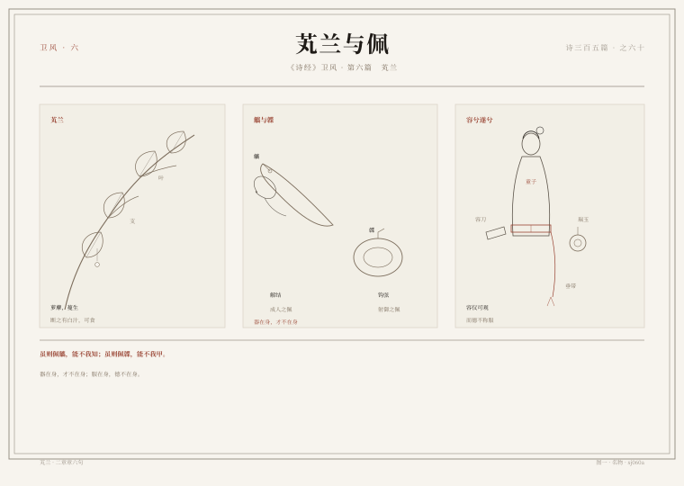
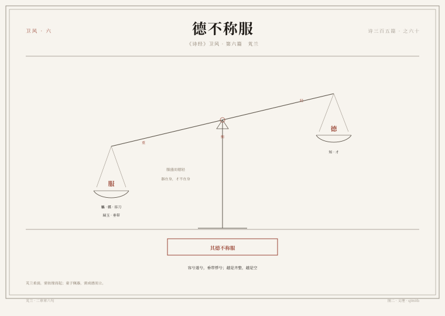

第六十篇 芄兰
卫风 · 之六 SJ060
朗读 · 普通话
依经文原文朗读，章次不读出；配古琴底乐，不改速、不加拖腔。全库同一音色（豆包 TTS），非播音员录制。
一 解题
诗三判：
- 谁在说：一个看不过眼的人。可能是大夫，也可能是诗人，甚至可能是一个女子在笑一个少年；「我」是谁，诗里没有说死。
- 说什么事：一个童子佩了成人的觿、韘，外表有威仪，内里却没有相应的才能与德行。「虽则佩觿」「虽则佩韘」两个「虽则」，是全篇的转轴。
- 为何编在此：卫风第六。前《竹竿》写「思而能以礼」，是礼的正面；此篇写「德不称服」，是礼的反面。卫风从情、到礼、到仪，一层层往下看。
《毛序》：「《芄兰》，刺惠公也。骄而无礼，大夫刺之。惠公以幼童即位，自谓有才能而骄慢。於大臣但习威仪，不知为政以礼。」
朱子《诗集传》：「此诗不知所谓，不敢强解。」
本库的看法：《芄兰》是一首「穿大人衣服的孩子」的诗。
芄兰是柔弱的蔓草，童子却佩觿佩韘；觿能解结，韘能射御，都是成人之器。他佩了成人之器，却没有成人之才；外面「容兮遂兮，垂带悸兮」，里面「能不我知」「能不我甲」。毛序读作刺卫惠公，朱子索性说不敢强解；本库取「刺骄」为骨，存「戏谑」为面。两读都落在四个字上：德不称服。
先辨一物：芄兰不是兰花。它是萝藦，蔓生，断之有白汁，可食；《释草》「雚，芄兰」，《陆疏》一名萝摩，幽州人谓之雀瓢。
二 经文
第一章
芄兰之支，童子佩觿。虽则佩觿，能不我知。容兮遂兮，垂带悸兮。
第二章
芄兰之叶，童子佩韘。虽则佩韘，能不我甲。容兮遂兮，垂带悸兮。
分章：二章，章六句。
三 韵读
| 一 |
支、觿、知；遂、悸 |
平支；去至。顾炎武说可平去通为一韵 |
| 二 |
叶、韘、甲；遂、悸 |
入叶、怗、狎；去至。入去相间 |
一章前四句一韵，后二句一韵；二章前四句一韵，后二句一韵。两章末二句完全相同，声音也完全相同：「容兮遂兮，垂带悸兮」——威仪的调子不变，变的是前面那个「佩」的人。「支、觿、知」三个平声字，轻而扬；「遂、悸」两个去声字，往下一收，像垂带落下来。
四 字义与名物
字义
- 芄兰（wán
lán）——草名，萝藦／萝摩；蔓生，断之有白汁，可啖。不是兰花。
- 支——枝；《毛传》「支，枝也」。
- 叶——叶；郑笺「叶犹支也」，二章换叶不换意。
- 童子——未成人者；毛疏说十九以下皆是。惠公即位约十五六，不必是幼儿。
- 觿（xī）——解结之器；象骨为之，形如锥；成人之佩，非童子之饰。
- 韘（shè）——钩弦之器；象骨为之，著右手大指，射御时用；郑笺读「沓」，即《大射》「朱极三」，以朱韦彄沓手指。
- 能——此处难直译，略同「却」「乃」；「不我知」「不我甲」都是宾语前置。
- 不我知——不知我；一说「才能不如我之所知」；知，智也。
- 不我甲——甲，毛传「狎也」，不亲近我；朱子「长也」，才能不长于我；郑笺「狎习」，才能不如我众臣所狎习。
- 容兮遂兮——容仪可观；遂遂然，佩玉垂貌。郑笺又读「容」为容刀、「遂」为瑞玉；朱子读作「舒缓放肆之貌」。
- 垂带悸兮——绅带下垂；悸悸然有节度。不是「心惊」；《韩诗》作「萃」，垂貌。
- 德不称服——内德不称外服；郑笺语。全篇的判词。
名物
- 芄兰之支、叶——柔弱蔓草，需依缘而起；喻幼稚之君需任用大臣。
- 觿——解结；成人之佩。佩在身上，不等于会解结。
- 韘——钩弦；射御之佩。佩在指上，不等于能射御。
- 容刀、瑞玉、绅带——威仪的三件行头；郑笺说，佩容刀与瑞及垂绅带三尺，行止有节度，「然其德不称服」。
- 童子——成人之服穿在童子身上；这是全诗的别扭处，也是全诗的笑处。
五 今译
第一章
芄兰的枝条，童子佩着觿。虽然佩着觿，却不了解我。从容啊，遂遂啊，垂下的绅带悸悸有节度啊。
第二章
芄兰的叶，童子佩着韘。虽然佩着韘，却不亲近我。从容啊，遂遂啊，垂下的绅带悸悸有节度啊。
说明：「能不我知」「能不我甲」两处，今译取「不了解我」「不亲近我」一路，是戏谑读法；若取毛、郑、朱的「才能不如我」「才能不长于我」，就要译成「他的才能不如我」「他的才能不胜过我」。两路都通，见第九节。
六 章旨
一章：芄兰之支。
芄兰是柔弱蔓草，需要依缘才能起；童子却佩上解结的觿。觿是成人之佩，不是童子之饰。「虽则」一转：器在身上，才不在身上。「能不我知」——他不了解我，或他的才能不如我。「容兮遂兮，垂带悸兮」——外面看去，容仪可观，佩玉遂遂，绅带垂得很有节度。
二章：芄兰之叶。
叶犹支，换叶不换意。觿换成韘：觿解结，韘钩弦；一个文事，一个武事，都是成人之器。「能不我甲」——他不亲近我，或他的才能不长于我。末二句原样重复：威仪的调子一点没变，变的是他佩的器物，和他始终跟不上的内里。
两章合看：服是成人之服，人是童子之人。
外面越有节度，里面越显空。诗不骂他「无礼」，只把他穿戴整齐地站在那儿，让「德不称服」四个字自己浮出来。
七 诗教
- 兴：芄兰柔弱，蔓生而需依缘；童子佩觿佩韘，也需成德。草与器都是兴，兴里带比。
- 观：观「德不称服」——衣冠、佩玉、垂带都可以学，才能与德学不来；观「威仪」可以饰，也可以遮；观「骄慢」的空，是从「虽则」两个字里看出来的。
- 群：可与「少年装大人」者同群，也可与「看穿而不揭穿」者同群。诗没有拍桌子，只留一声冷笑；这一声笑，比骂更耐读。
- 怨：怨而不怒。真正的锋利在「容兮遂兮，垂带悸兮」——越是写得从容有度，越显得里面没有东西。
八 分寸与边界
- 不可把芄兰当兰花。它是萝藦，蔓草，有白汁，可食；认成兰花，兴就断了。
- 不可把觿、韘当普通佩饰。觿解结，韘钩弦，都是成人之器；只是好看，就把它读浅了。
- 不可把「童子」当幼儿。毛疏说十九以下；惠公即位约十五六；也可以是泛指少年。
- 不可把「悸」读成心惊。这里是垂带貌，悸悸然有节度；《韩诗》作「萃」，也是垂貌。
- 不可把「甲」只读甲胄。毛传「狎也」，朱子「长也」，郑笺「狎习」；三读都比「甲胄」贴。
- 不可把「能不我知」只读「不认识我」。它也可以是「才能不如我」；前者是戏谑，后者是刺讥。
- 不可把毛序「刺惠公」当定论。朱子就说「不知所谓，不敢强解」；历史坐实是一说，不是唯一说。
九 存疑
- 诗旨：毛序主刺惠公骄而无礼；朱子直言不敢强解；今人又有讽刺贵族少年、女子戏谑童子等读法。本库取「刺骄＋戏谑」两层。
- 作者与「我」：大夫、诗人、女子，皆有可能；「我」随读法变，诗里没有说死。
- 「甲」：毛传「狎」，朱子「长」，郑笺「狎习」；三说并存。今译取「亲近」，是戏谑一路。
- 「容兮遂兮」：毛传「容仪可观，佩玉遂遂然」；郑笺「容刀、瑞玉」；朱子「舒缓放肆之貌」。三说可通，图一取「容刀、瑞玉、垂带」的实物一路。
- 「悸」：毛、郑「有节度」，朱子「带下垂之貌」，《韩诗》「萃，垂貌」；不取「心惊」。
- 惠公年龄与史事：毛疏推算十五六；《左传》只说「即位也少」。不必坐实。
- 芄兰植物：萝藦／萝摩，一名雀瓢；《释草》《陆疏》可互证。今名萝藦。
- 「能不我知」的「能」：虚词还是实词，历来无定解；今译取「却」，不强行语法化。
十 跨典
- 《卫风·淇奥》：「有匪君子，如切如磋，如琢如磨。」那是德称其服的君子；《芄兰》正好相反：服盛而德轻。
- 《鄘风·相鼠》：「人而无仪，不死何为？」那是直骂；《芄兰》不骂，只把衣冠穿好，让你自己看见空。
- 《卫风·硕人》：「衣锦褧衣」是外饰；《芄兰》的觿、韘、容刀、瑞玉，也是外饰。两篇对看，一个写美，一个写空。
- 《礼记·玉藻》：「君子无故，玉不去身。」佩玉本来象征德；《芄兰》有玉，无德，所以「德不称服」。
- 《论语·雍也》：「文质彬彬，然后君子。」《芄兰》是文胜质：威仪有余，质实不足。
- 《卫风》脉络：《竹竿》守礼，《芄兰》刺骄；一个是礼的正面，一个是礼的反面。卫风前六篇，礼之两面已见。
十一 双卡与图
双卡五对：
| 芄兰（萝藦蔓草） |
芄兰（兰花，误） |
| 觿（解结成人之佩） |
觿（普通骨锥，失礼器） |
| 韘（钩弦射御） |
韘（扳指首饰，窄） |
| 悸（垂带貌） |
悸（心惊，误） |
| 甲（狎／长） |
甲（甲胄，误） |

图一 · 芄兰、觿韘、容刀瑞玉 名物图

图二 · 服盛德轻，其德不称服 义理图
读图三处：
- 芄兰：图一左，柔弱蔓草，断之有白汁；它需要依缘，正如幼君需要大臣。
- 觿与韘：图一中，一个解结，一个钩弦；都是成人之器，不是童子之饰。
- 德不称服：图二，左边「服」重，右边「德」轻；越看越明白，问题不在佩什么，而在佩的人。